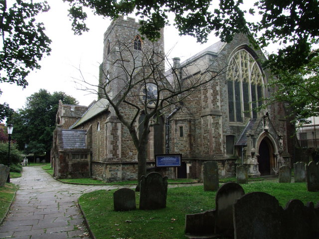

St Eanswythe’s Primary school has close links with the Church of Saint Mary and Saint Eanswythe. All children attend a service at the Church fortnightly. The whole school celebrates Harvest, Easter and Christmas at the Church. We also have annual welcome, leavers' and confirmation services.
A local vicar visits the school regularly and is available to talk to staff, children and parents. Clergy visit the school regularly to lead worship for all children.
The Church of Saint Mary and Saint Eanswythe stands as in a garden, and is rich in beautiful memorials. In it lies the remains of King Ethelbert’s granddaughter, Eanswythe.
Originally enshrined in a monastic chapel in the cliff top castle of her father, King Eadbald of Kent, St Eanswythe’s remains were moved shortly after her death, at the young age of 26 in 640 AD, to the church, to avoid the ravages of Viking raiders and erosion by the sea.
They survived the destruction of the town by Earl Godwin in 1050, the destruction of the church by fire in 1217, and the dissolution of the priory in 1535 and remained forgotten but secure until 1885 when discovered in their twelfth century reliquary during restoration of the church by the priest Matthew Woodward, when a fitting shrine was set into the sanctuary wall. Her remains lie today behind the small oak door under the mosaic of St. Peter. Eanswythe’s Saint’s Day is on 12th September. The school celebrate this day by attending church!
St Eanswythe’s Primary school also has links with Cheriton Baptist Church and South Kent Community Church. Leaders from these churches regularly lead worship at school.